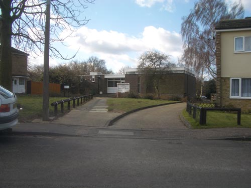
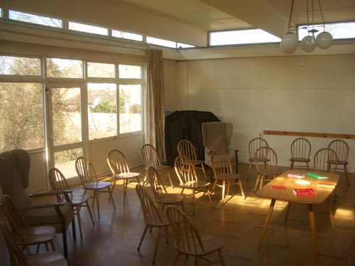

| < | > |
| harlow | [2006-03-07 23:56] |
| come with me - and i will take you out to harlow town in essex - where we will wander lightly singing through the suburban park roads - dog walker cycle paths - and little low-housed housing estates - until we arrive at the society of friends
 once there - well we'll wait for everyone to turn up - because we are early - because we have taken the train out from the heart of london - out to this once new town - where architects had sought to build a community - way back in those days when war had ended and society used to exist  an old man is shuffling in late - he must be deaf - he's testing that his earphones work - yes in some quaker meetings they have a microphone and induction loop so that the hard of hearing can hear when someone speaks about halfway through the meeting - without rising - he speaks - slow firm words - with gaps that he has to prepare to cross - everyone is listening why is it now so difficult to affirm one's faith - circling around this idea he gets to what he wants to say - he had seen tony blair on the television talking about praying for guidance before going to war - it had made him glad to see someone have the courage to affirm their faith like this in public i was mystified - weren't all quakers anti-war - why was he praising blair - many heads were bowed in thoughtful silence - i went back to the spider's web up out of reach a couple of spider's webs glowed silvery in the sunlight - all that intricate work made me wonder about the origin of spiders - once upon a time there had been a mutant who could make a sticky blob - this blob had ensured its survival because it ate what stuck to the blob - over time the blob had become the complex webs we see today maybe the word god had started out as just such a blob - ideas had stuck to it - over time whole religions had been spun out of it which got me back to the old man's rant - i stood up it's not easy being in a minority - indeed just acknowledging oneself to be odd-man-out can seem provocative - for example i don't have a faith to affirm - it's just not my style - and for me god is no more than a dangerous word - perhaps affirming one's faith is the same as speaking like this but in a different context a half-raised head across the room caught my eye and smiled as i sat down - as the meeting ended the lady next to me said in hushed tones as she shook my hand - thank you for saying what we all thought |
|